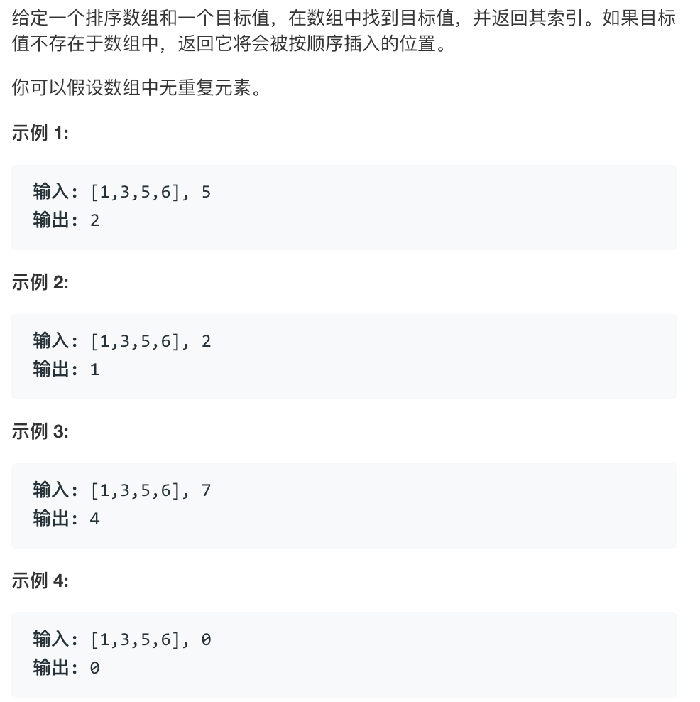

首先二分法只适用于已经排序过的数组。
二分法的思想就是通过每次排除一半的数列，在剩余一半的数组中查找目标值并返回其所在的位置。相比于直接查找二分法的效率更高，其时间复杂度是O(log2n)。
python代码实现：
1 | def Binary(nums, target): |
用例子解释为什么循环执行的条件是left<=right：
[3，8，15，21，35，54，63，79，82，92，97] #目标数列
0 1 2 3 4 5 6 7 8 9 10 #目标数列的序号
第一轮：
left_index = 0, right_index = 10, mid_index = (0+10)/2 = 5, taget = 87
第二轮：
mid = 54<87
所以left_index = mid_index+1 = 5+1 = 6
mid_index = (6+10)/2 = 8所以mid对应的值是82
第三轮
mid = 82<87
所以left_index = mid_index+1= 8+1 = 9
mid_index = (9+10)/2 = 9所以mid对应的值是92
第四轮
mid = 92>87
所以right_index = mid_index-1 = 9-1 = 8
此时left_index = 9 > right_index = 8
不满足while循环跳出
题目
leetcode 35. 搜索插入位置
